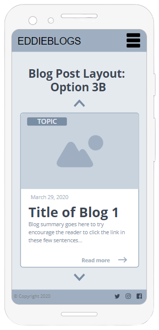
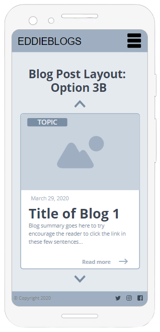

Blog: Wireframe Development and General Website Planning
By Jesse van der Merwe,
Wireframe Development
User Interface Research and Goals
I believe that the two most important pages in terms of User Interface (UI) of my website is that of:
- My home page
- My blog post main page
The focus of this blog post is to try and decide on a layout for the blog post main page. This page is super important because it is where the user is exposed to all the various blog posts that I have written. If these blog posts are not displayed in a visually pleasing way, then users are not going to click on the blog posts, which means they are not going to read the blog posts... :(
I did a bit of research about the User Experience and User Interface. I really enjoyed and took lots of inspiration from the webflow.com "10 essential UI (user-interface) design tips", as well as uxdesign.cc "9 tips to quickly improve your UI designs". I have come to the conclusion that the following are important to include/think about:
- Ensure expectations are always made clear. Examples include:
- Highlighting buttons
- Using the corresponding cursor for all parts of the page
- Using appropriate colours (i.e. don't use green for stop/bad/no)
- Anticipate user's mistakes:
- Prevent the mistakes as much as possible
- Provide ways to easily fix any mistakes after they happen
- Make sure your error messages are crystal clear
- Feedback feedback feedback!!!
- Fast loading times
- If that can't happen, display a visualization that makes the loading time less boring
- But perhaps don't use an actual loading bar... as this might make the loading time seem longer, therefore use a visualization that doesn't imply progress.
- The closer and/or bigger something is, the faster you can put our cursor/finger on it
- Make buttons and icons big enough to easily see and click
- Make buttons for the most common actions larger and more prominent
- Place commonly interacted with elemtns on the edges/corners of the screen so that it lessens the need for accuracy (i.e. a user doesn't need to worry about overshooting when clicking/tapping)
- Horizontal scrolling is unusual... and therefore needs big and obvious cues for the user to be able to predict and use it without confusion
- Stick to standards!!!
- Make sure all elements are clear and well defined
- A "cheat" is to use drop shadows or a super subtle border to make elements appear sharper
- NB: Shadows must all come from one light source!!!
- Use nice big fonts, especially for long-form content
- If there is a "tutorial" experience - allow users to skip it!
- Use subtle overlays (usually just a black transparent colour) to improve the contrast between the any text that is on top of another image
- White space is your friend!
My Blog Page Wireframes
WIREFRAMES DEVELOPED ON moqups.com!! Below are theWireframe Idea 1
NOPE


Wireframe Idea 2
ALSO A NOPE

Wireframe Idea 3
MUCH LESS NOPE... but still nope
 

Wireframe Idea FINAL